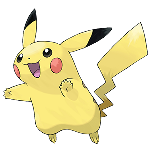

Pikachu (Japanese: ピカチュウ Pikachu) is an Electric-type Pokémon.
It evolves from Pichu when leveled up with high friendship and evolves into Raichu when exposed to a Thunder Stone. Pikachu is popularly known as the mascot of the Pokémon franchise and a major representative of Nintendo's collective mascots. It is also the version mascot of Pokémon Yellow, where it is the only starter Pokémon in that game. It has also made numerous appearances on the boxes of spin-off titles. It is also the starter Pokémon in Pokémon Rumble Blast.